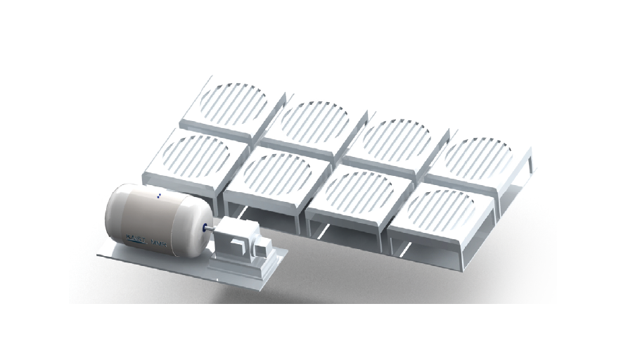

Report by Subjects
Report by Subjects
KAIST RESEARCH ACHIEVEMENTS
Supercritical CO2 cooled
Micro Modular Reactor
Department of Nuclear and Quantum Engineering
Jeong Ik LeeㆍYonghee KimㆍYong Hoon Jeong
Summary
In the near future, micro modular nuclear reactors will be developed and will supply electrical needs in various regions. Micro modular reactors have better safety and are easier in maintenance compared to conventional large reactors, which leads to lower probability of severe accidents. Even in case of an accident, the total amount of radioactive material is small. Therefore, damage to the environment can be minimized. After permanent shutdown, the reactor module can be taken back to the factory and decommissioned leaving minimum amount of radioactivity in the reactor site. Conventional reactors use the water cycle, but the newly proposed micro modular reactor of KAIST has adopted the CO2 loop for cooling and power generation. This allows long life spans up to 20 years without refueling. Also the power generation system can be reduced in size so that the whole module can be transported by a truck.
R&D Report
With these various advantages, the KAIST micro modular reactor can be applied for electricity generation on offshore plants, polar regions, Alaska, Russia, Northern Europe, Middle East, Africa, and many other regions under extreme weather conditions. Also the micro modular reactor uses CO2 as its coolant and does not require cooling water, so it can be used for an independent power source in small cities with populations of few hundreds of thousands even in inland. It can also be applied in space travels or in exploration bases on the moon where water and air are valuable.
Throughout the world, interest is moving towards small modular reactor systems. However, if we observe the currently proposed designs, most have succeeded in decreasing the size, but haven't been able to completely modularize the whole reactor. To break the limits, the supercritical CO2 Brayton cycle was chosen over the steam Rankine cycle for the power generation cycle. Also, the proposed reactor is a gas cooled reactor which can run without refueling for 20 years. The power generation cycle is integrated with the reactor to further modularize it. To guarantee its safety over long operational time, new designs that haven't been used in conventional large reactors were adopted in the power generation system. The development of the proposed reactor will allow nuclear power to contribute not only in power generation but also in energy dependent industries like offshore plants, heavy chemical industry, steel industry, and etc. which would ultimately reduce green house gas emission. Furthermore, energy supply for extreme environments(polar areas, deserts, space, and etc) will be available for long periods of time. The existing small modular reactor designs mostly use water as the coolant and oxidized uranium as fuel. Although these may be good choices in making large reactors economical, there are economical limits when the capacity is reduced.
This research aims to overcome these issues by adopting a supercritical CO2 cooled micro modular reactor(KAIST MMR) concept that uses a long period core(can be run for more than 20 years without refueling) with supercritical CO2 as coolant and uranium-nitride as fuel was developed. Also, by actively adopting the supercritical CO2 power system, designated as one of top thirteen industry engine project, we have simplified the power conversion system and developed a new nuclear power system that can passively remove the decay heat in case of reactor shutdown to avoid another Fukushima accident. As our main research achievement, the feasibility of downsizing and modularization of nuclear power plant was confirmed by designing the reactor core and power generation system in one vessel. Also, in reactor design, uranium-nitride, suitable for long period low enriched uranium fast reactors, was selected; the dynamic properties and variables for nuclear reactor control were designed and evaluated. In the power generation system, the small sizing and high efficiency advantage of supercritical CO2 power conversion system was actively utilized to create a very simple and high efficiency system. Moreover, PCHE, a next generation heat exchanger that adopts semiconductor manufacturing process, was used and a technical accomplishment of using radial turbomachinery, which are not used for large reactors, was achieved. As seen in the Fukushima accident, nuclear reactors produce large amounts of decay heat even after shutdown and if external power source is not provided, catastrophes can happen. To avoid such events, The proposed KAIST MMR(Micro Modular Reactor) consists of a passive heat removal system that can cool the reactor with natural circulation in case of reactor shutdown.
 Fig 1. A safe and economical nuclear power plant concept that can be applied for distributed generation was proposed. Small cities, developing countries with difficulties adopting large reactors, middle easter n countries with water shortages, and polar areas are the potential demands of the safe and reliable small modular reactor. Energy dependent industries such as ocean industry, chemical industry, steel industry, and etc can adopt technology to reduce carbon dioxide reduction. Economical nuclear power plants can be supplied to the society through modularization which results in shortened construction time. Working with the supercritical CO2 power generation system development project included in the top thirteen industrial engine hosted by the Ministry of Trade, Industry and Energy, a nuclear reactor concept that can play a leading role in nuclear energy application of next generation power generation system was proposed.
Research results
ㆍ2014 KAIST Top 10 research achievement.
ㆍKorean Nuclear Society, Best poster award - 'Preliminary design of S-CO2 Brayton cycle for KAIST Micro Modular Reactor', Seong Gu Kim, Min-Gil Kim, Seong Jun Bae, Jeong Ik Lee, October, 2013.
ㆍMicro Modular Reactor, 2014-08-07, Patent No. 10-2014-0101841
ㆍPower control system for supercritical carbon dioxide power conversion system, 2015-02-06, Patent No. 10-2015-0018333
Reference material
ㆍPaper1: Min Gil Kim, Jeong Ik Lee, Donny Hartanto, Yong Hee Kim, 'Conceptual Design of S-CO2 Cooled Micro Modular Reactor', Jeju, Korea, May 30-31, 2013.
ㆍPaper2: Seong Gu Kim, Min Gil Kim, Seong Jun Bae, Jeong Ik Lee, 'Preliminary Design of S-CO2 Brayton Cycle for KAIST Micro Modular Reactor', Transactions of the Korean Nuclear Society Autumn Meeting, Gyeongju, Korea, October 24-25, 2013.
ㆍPaper3: Seung Joon Baik, Seong Jun Bae, Seong Gu Kim, Jeong Ik Lee, 'Preliminary Design of KAIST Micro Modular Reactor with Dry Air Cooling', Transactions of the Korean Nuclear Society Spring Meeting, Jeju, Korea, May 29-30, 2014.
ㆍPaper4: Seong Gu Kim, Seongkuk Cho, Hwanyeal Yu, Yonghee Kim, Yong Hoon Jeong, Jeong Ik Lee, 'System Design of a Supercritical CO2 cooled Micro Modular Reactor', Proceedings of the HTR 2014, Weihai, China, October 27-31, 2014.
ㆍPaper5: Hwanyeal Yu, Donny Hartanto, Yonghee Kim, 'A conceptual Study on a Supercritical CO2-cooled Micro Modular Reactor', Proceedings of the HTR2014, Weihai, China, October 27-31. 2014.
Research finance
ㆍHigh Risk and High Return Project(HRHRP) - Conceptual design of Micro Modular Reactor, Jan 2013 ??Dec 2013.
ㆍSupercritical CO2 cooled Micro Modular Reactor(MMR), June 2013 ??May 2016.